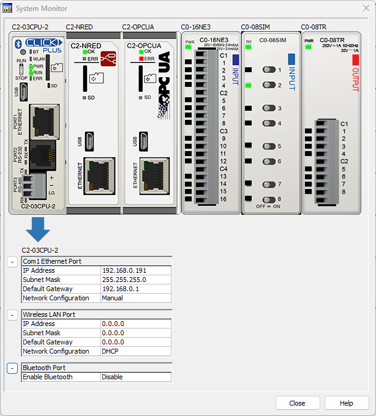
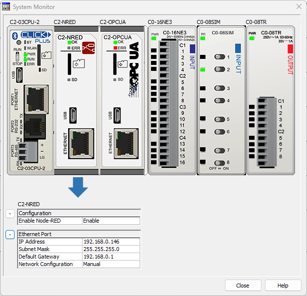
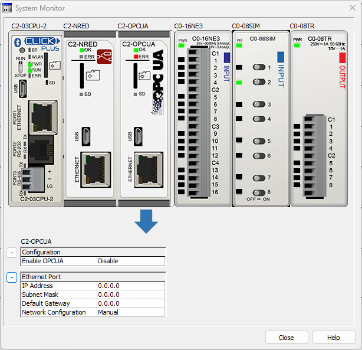

Topic: CL191

| System Monitor |
Topic: CL191
|
The System Monitor window displays the LED indicator status and analog I/O values in real time. You can use this to check if the CLICK PLC is functioning correctly.

1 Physical Value/Scaled Value: You can select the display of the analog I/O values between the Physical Values that the analog I/Os receive/output actually and the Scaled Values stored in the DF memory addresses.
The system monitor will also show the port settings and whether each port is enabled for each of the Com ports on a processor module


